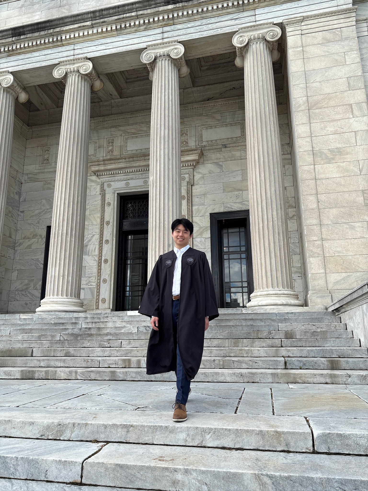

News
Graduation - Case Western Reserve University, May 2025
I graduated from Case Western Reserve University with my bachelor's in Chemistry and minors in Mathematics and Computer Science. I'm grateful for the mentors, collaborators, and friends who have shaped my journey thus far. Looking ahead, I'll remain in Cleveland to work as a research assistant in the Gryder lab, while applying to PhD programs in either genetics or cancer biology.